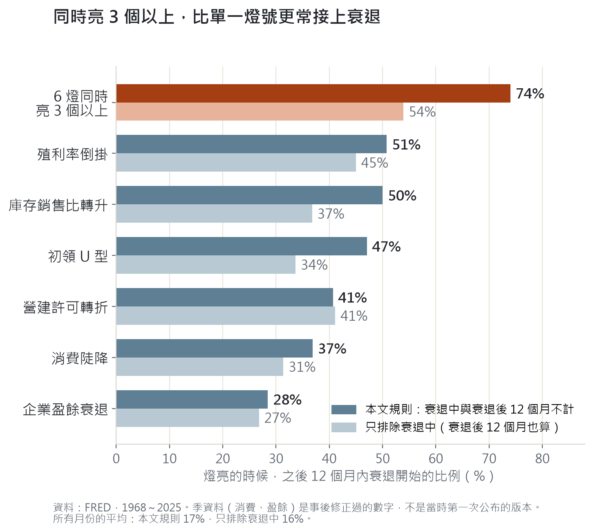
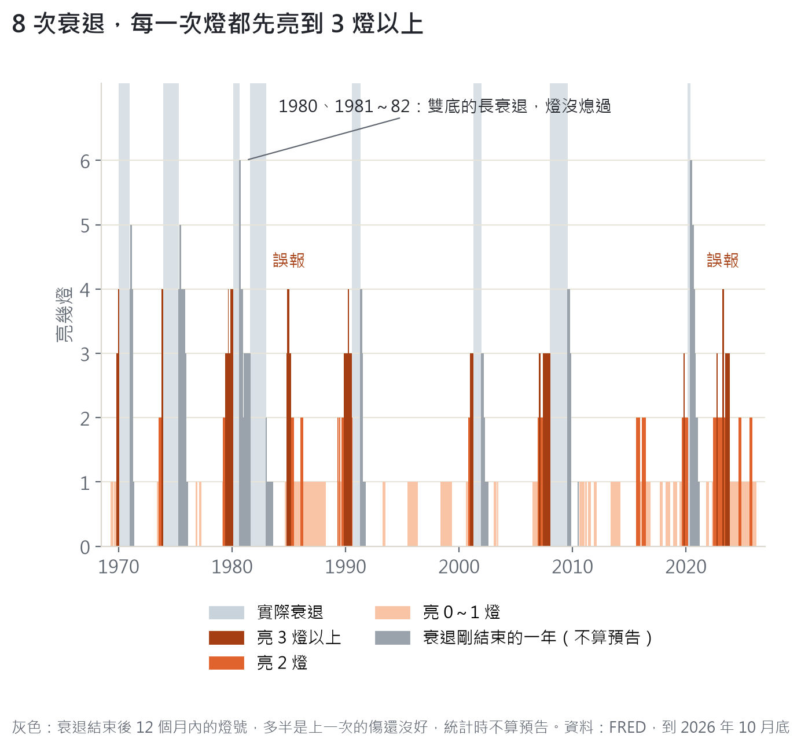
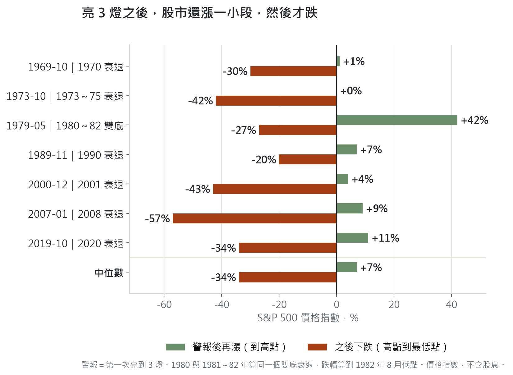

2026-11-25 修正版（與方格子線上版同步）。
本文以標普500為基準(S&P 500)，從高點回撤 20% 以上，1960 年以來共 10 次。有辦法從美國總經的各項指標中，找到預測景氣衰退的聖杯嗎?
結論：歷史不會重演，但會押韻；每次景氣衰退時的問題不盡相同，但不變的是變弱的訊號越多，衰退的機率越高。
- 第一輪，15 個指標回測 10 次股市大跌，全班死當。
- 第二輪，目標換成景氣衰退，留下6個關鍵指標，改看「同時亮幾個」。
- 1968 年以來 8 次衰退，每一次燈都先亮到 3 燈以上，提前 2～12 個月。
- 亮 3 燈就是警鈴大響：4 次有 3 次小偷真的來了，很可靠，而不是小偷都走了，帳戶都空了，警鈴還像個擺設。
- 但它不是賣出訊號：亮 3 燈後，S&P 500 中位數先漲 7%，再轉跌 34%。
- 2026 年 10 月底，6 個燈都沒有亮：景氣衰退領先指標。
研究總體經濟目的不是知道去哪裡賺錢，它比較像天氣預報，不會告訴你今天能賺多少，只會告訴你出門要不要帶傘。下雨天不適合曬棉被，晴天也不用穿雨鞋；它能做的，是提醒我們哪些事情先別做，哪些事情現在做剛好。
我想要的也就這麼多：在淋成落湯雞之前，早一點看到遠方密布的烏雲。(白話文就是衰退之前有所準備，不要多年的辛勞化為烏有)
15 個候選的總經指標，每一個都理所當然：初領失業金、實質消費、營建許可、設備投資、庫存銷售比、殖利率倒掛、倒掛後回正、薩姆規則、信用利差、企業盈餘、油價、降息後又升息，還有總經惡化頻率。
為了不要事後調整，我在 2026 年 10 月 7 日先預先登記門檻：
結果是：15 個指標通通不及格，其中
命中率高的，誤報率也高；誤報率低的，命中率又太低。
薩姆規則還有一個更尷尬的地方。1968 年以來美國有八次衰退，扣掉 1981 年那次（上一次衰退才剛結束，失業率本來就還在高檔），剩下七次，它在衰退開始前一年內一次都沒有亮。它總是等衰退已經開始約3 個月後亮燈；1973 年那次更慢，衰退開始半年後還是沒亮。換句話說，它不是在告訴我們「快要打雷下雨了」，而是在告訴我們「雨還會在下一陣子喔」。薩姆規則是同時指標，卻不是領先指標。
單看一棵樹，每一棵各有不同。但景氣轉弱不是一棵樹倒下，而是一整片森林在掉葉子。
事後看，每次景氣衰退的原因各有不同，但有一個傳導鏈，會從局部惡化到連鎖反應；景氣擴張的太快，供給大幅增加終將導致超越需求，過度投資；常見的一條路是：升息，資金先收緊，房子先賣不動；接著公司賺得少，貨開始堆在倉庫；再來是裁員；最後，大家沒錢花。每一次出問題的地方不同，但雪球總是越滾越大。
與其試圖去找及格的指標，不如過濾出關鍵指標，改看「同時亮幾個燈」：
從 15 個指標中，我刪掉相近的 2 個、歷史太短的 1 個、亮的時候衰退多半已經開始的同時指標（薩姆規則、信用利差、設備投資）、邏輯上說不通的（倒掛後回正、油價暴漲、降息後又升息），留下 6 個：
規則：我每個月底數一次，6 個燈亮了幾個。但衰退正在發生的月份不算，衰退結束後的一年也不算。因為那時候燈亮著，只是上一次的傷還沒好，不是下一次又要來了。
舉例來說，2008 年那次衰退，從 2007 年底一路到 2009 年中。這段期間 6 個燈幾乎全亮，但那是因為衰退已經在發生，燈只是在說「現在很糟」，不是在預告。衰退結束後，失業率、消費這些數字也要慢慢爬，燈不會馬上熄。所以從 2007 年底到 2010 年中，這兩年半的燈號我都不算。我要看的，只有景氣看起來還好的時候，燈有沒有先亮。
先講兩個限制。第一，這 6 個燈是看過歷史之後才定案，所以下面的成績會偏樂觀〔推論〕。第二，消費、盈餘這類季資料用的是事後修正過的數字，不是當時第一次公布的版本，所以命中會被高估。

▲ 單一燈亮，之後一年衰退的比例 28～51%；同時亮 3 個以上，74%。如果衰退剛結束那一年也算，是 54%。
再看亮幾個燈，各是多少：
| 亮幾燈 | 之後 12 個月衰退開始 | 月數 |
|---|---|---|
| 0 | 6% | 255 |
| 1 | 7% | 155 |
| 2 | 37% | 52 |
| 3 以上 | 74% | 50 |

▲ 8 次衰退，每次燈都先亮到 3 燈以上。1980 和 1981～82 年是雙底，燈沒熄過。灰色是衰退剛結束的一年，不算預告。
誤報不多，就是好警鈴。景氣還好的時候，它響過 9 次，7 次小偷真的來了。我們不要的是小偷都走了，警報還當作擺設，那就事情大條了。
接下來的問題是：燈亮了，然後呢？

▲ 7 個衰退週期（1980 和 1981～82 年算一個雙底），從第一次亮到 3 燈那個月算起：S&P 500 中位數還會再漲 7%（約 4 個月到高點），之後才跌 34%。Nasdaq（6 次）是再漲 16%，之後一路下跌 40%。
最多的一次再漲四成，兩次幾乎沒有漲。但當下的漲幅和後面的跌幅，不成比例。
事後看，這是一道簡單的選擇題：漲得少，跌得多，誰那麼傻不先離場。但回到當下，你的感受會大不同，在燈亮的時候，市場多半還在漲，成交量還在往上衝，新聞仍訴說著未來的無限美好。
而且要公平看，不能只挑真的衰退的那幾次算：野狗路過的兩次，之後一年 S&P 500 反而漲 14%、20%。小偷真的來的 7 次，賣在亮燈當月，中位數也只少跌 7%。
所以警報告訴你的是「風險升高」，提醒我們要想好應變計畫，而非立刻「一鍵清倉」。
最近 15 年更尷尬。2011 年以後，警鈴響了 2 次：2019 年 10 月，和 2022 年 9 月～2023 年 10 月。只有第一段之後有衰退，也就是 2020 年的Covid19。
2022～23 年是近年最像要衰退的情境。最多亮到 4 燈，經濟卻優雅的緩著陸，沒有衰退。我的解讀是景氣循環走到復甦與成長期時，暴力升息也沒辦法扭轉景氣循環的巨輪。
它量的是衰退，不是股災。亮 3 燈以上之後，12 個月內 S&P 500 跌 20% 以上的比例，只有 32%。
它的分辨力有限。我用「只用過去猜未來」的方式檢驗（1990～2025 年，每年 1 月只用當時已知的結果重估）：預測衰退的分辨力是 0.77，預測大盤跌 20% 只有 0.61（0.5 等於亂猜，1 等於完美）。
訊號變弱了。亮 3 燈以上之後衰退的比例，1968～1995 年是 81%，1996～2025 年是 65%。
樣本很少。衰退只有八次。
2026 年 10月底，6 個燈全暗，歷史比例約 6%。2025 年 10 月亮 2 燈，之後降到 1 燈，2026 年 3 月起連續 8 個月全暗。
每個月 2 日更新：景氣衰退領先指標儀表板。11 月的讀數，12 月 2 日更新。
這6個燈量測的是美國景氣的衰退，命中率很高，會提早2~12月亮起。當警報響起時，衰退機率大增，你的部位撐得住嗎？
更短的心法、方法與盤感，我寫在粉專，入口在這裡：德克 mur mur 粉專。
資料與限制。資料：FRED（初領失業金、實質個人消費、營建許可、殖利率、企業盈餘、庫存與銷售、失業率）、Yahoo（S&P 500、那斯達克），第一輪 1960 年起，6 燈 1968 年起；衰退日期用 NBER。燈的概念多半來自 Izaax 的財訊專欄與書；門檻、預先登記與回測是我自己做的。限制：6 個燈是看過歷史後才定案，成績偏樂觀〔推論〕；季資料是事後修正過的數字；衰退只有八次；2022～23 年的失靈沒有解釋；價格指數不含股息。定義修過一次；亮 3 燈後衰退的比例 54%～74%。
本文只整理資料與推論，不是投資建議。
德克 mur mur｜研究整理，不構成任何投資建議。資料來源與限制見文末。